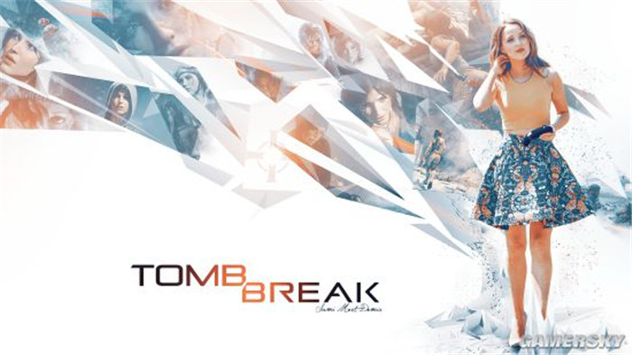
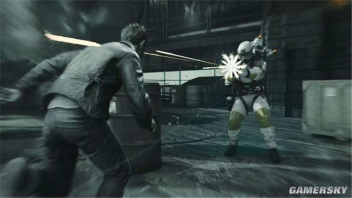
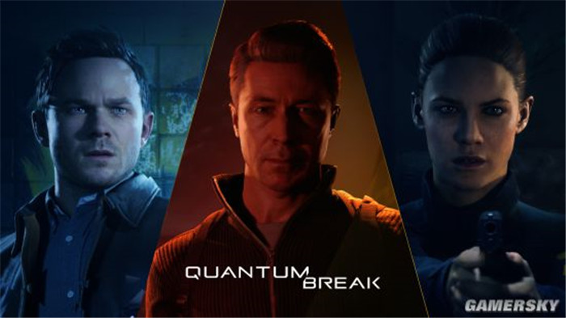
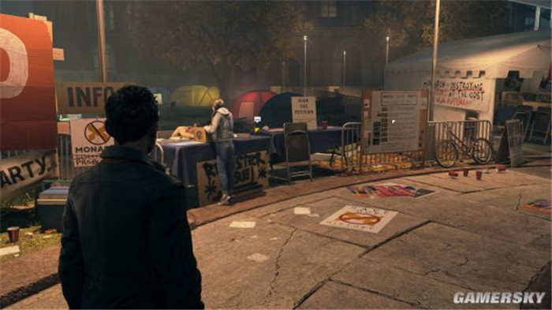
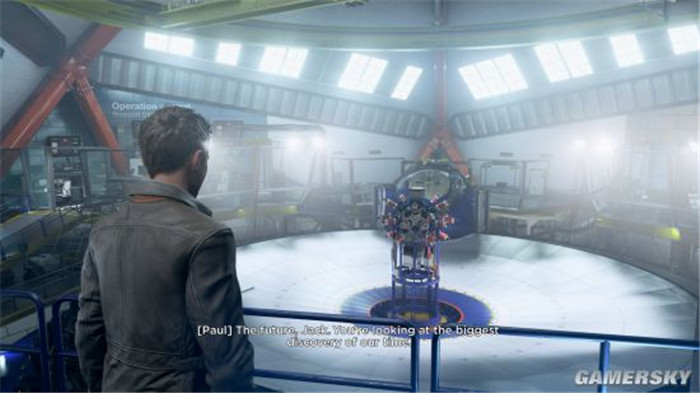
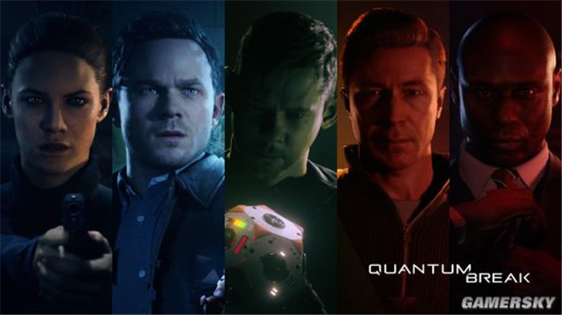

量子破碎是一款第三人称射击类的游戏
是微软的年度大作，几乎和最终幻想一样，真人CG几乎占了一半的时间
但是剧情非常好，在我新电脑到了之后，我入得第一个正版就是，正值夏季促销，就买了下了
全程游戏一周目大概10个小时的时间，游戏共五章，但是似乎只有一个结局，但是每章的选择会影响一部分人的状况，而且CG也不一样
整体上来讲，作为第三人称游戏略显枯燥，但是剧情相当不错
讲了一个无意中获得了时间能力的人，尝试着拯救世界，在经历最初的痛苦，无助，不过幸好还有几个人的支持，在一开始以为哥哥死后，开始寻找哥哥留下的反制措施
哥哥的笔记中曾经提到：有一个人让我研究反制措施，以后可以拯救世界。。。然后和弟弟吵架之后，说道，我花费数十年的时间去研究了一个可以拯救世界的物品，想要保护我最爱的人，而现在，我失去他了。
在贝斯的帮助下，最后终于回到了一开始的地方，他发现哥哥竟然没有死，哥哥告诉他，只要是没有亲眼见到的，就不是真实的，而过去的已经不可改变，就这样贝斯最后还是死亡，里面有各种各样的人物，真人CG做的非常好这也是游戏的一大特点
最后击败了保罗，拯救了世界，但是公司依旧还在。